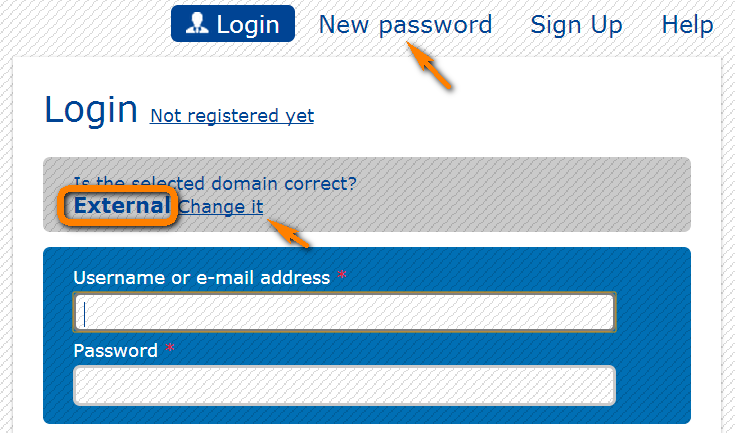
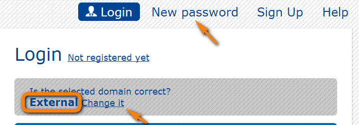
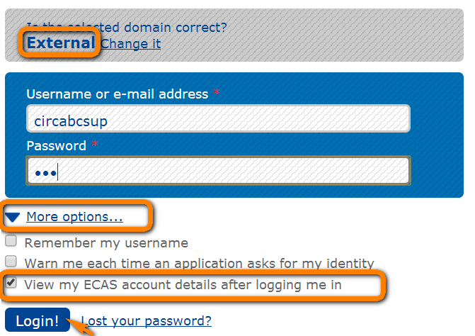

-
What is ECAS?
ECAS is the Commission's Authentication Service. It is the system for logging on to a whole range of websites and online services run by the European Commission. Once you've used ECAS to log on to a website or service, you won't have to identify yourself again as long as you leave your browser open. CIRCABC is using ECAS as authentication service.
-
How to create your ECAS account (External users only)
 Users from the European Commission and other EU institutions and bodies already have an ECAS account and can login to CIRCABC.
Users from the European Commission and other EU institutions and bodies already have an ECAS account and can login to CIRCABC.
External users (Partners, Researchers and Citizens) will need to sign up to ECAS as explained here:
- Click on https://circabc.europa.eu (Link to CIRCABC)
- Login
- Choose: The EXTERNAL domain of ECAS
If the domain is not the right one, "Change it" will redirect to the previous page.
- Sign Up
- Then complete the form:
For more detail refer to the Guide "Access and get password" which is available here. -
How to reset/get your ECAS password
If you have forgotten your password you can get a new one following the steps below:
- Click on https://circabc.europa.eu (Link to CIRCABC)
- Login
- Choose your domain (External users must choose the EXTERNAL domain)
If the domain is not the right one, "Change it" will redirect to the previous page.

You will then be asked to enter your username or your email address -
I cannot reset my password, what can I do?
If you cannot reset your password, please check the following points:
If the domain is correct:
It is very important to click on New password from the right domain, E.g. External users should choose the External domain

If the domain is not the right one, "Change it" will redirect to the previous page.
If your username is correct:
If you have forgotten your username you can try with your email address.
Your email address has been changed and you cannot reset your password:
In this case, you have to contact DIGIT-USER-ACCESS at +352 4301 35035 (Monday-Friday between 8:00-18:00 Central European Time) in order to obtain a temporary password to be able to update your email address. Once the temporary password is received, you will be able to update the e-mail address, (See the point: How to change your email address?) Your email address will be updated according to ECAS -
How to delete your ECAS account (External users only)
If you remember your password, you can delete your ECAS account by proceeding as follows:
- At https://circabc.europa.eu you click on "Login": this takes you to the ECAS authentication system
- You follow link "More options" and tick "View my ECAS account details after logging me in"
- You enter your username & password and click "login"

The ECAS page titled "ECAS account" is displayed: Click "Account information" (in black-background bar at top of page).
Press on "Delete your account>": you are requested to confirm the action > Click "Delete"
THE ACCOUNT DELETION IS IRREVOCABLE, THIS MEANS THAT YOU WILL LOSE YOUR ACCESS AND ALL YOUR MEMBERSHIPS.
-
How to change your email address (External users only)
You have to change your email address in ECAS, then it will be automatically updated in CIRCABC when you login.
How to change your email address in ECAS:
- Login to ECAS: https://webgate.ec.europa.eu/cas/userdata/ShowDetails.cgi
- Modify my personal data
- Change your email
- And Click on Submit
When you login to CIRCABC your email address will be updated to the one in ECAS. -
I have lost my password and don't have access to my old mailbox, what should I do?
Please contact DIGIT-USER-ACCESS at +352 4301 35035 (Monday-Friday between 8:00-18:00 Central European Time) in order to obtain a temporary password to be able to update your email address.
Once the temporary password is received, you will be able to update the e-mail address (See the previous point : How to change your email address?). -
Can I use my W account to access CIRCABC?
We strongly advise users who have a Wxxxxx ECAS account to create and use a 'normal' ECAS account to connect to CIRCABC. The Wxxxxx accounts are special technical ones that do not have associated e-mail accounts.
Please refer to How to create your ECAS account? -
Why is ECAS asking me to provide a PIN code?
Your account belongs to the eFP7 application, that's why there is a PIN code required in order to increase the security level of the user.
According to the information provided to us (the eFP7 application is independent of CIRCABC), you should have received an automatic e-mail from the system when your LEAR account was created.
For security reasons, to retrieve your PIN code, you can either contact ec-research-it-helpdesk@ec.europa.eu or call our colleagues of EC-RESEARCH-IT-HELPDESK directly – phone number +352 4301 31570 (Monday to Friday between 9:00-17:00 Central European Time). -
ECAS is asking me to provide a phone number
The phone number is not required to create the ECAS account for CIRCABC if the login is done via the CIRCABC link https://circabc.europa.eu rather than directly in ECAS. We therefore propose that you try again to login or to reset your password.
-
We have created an account linked to a shared (functional) mailbox, the password has not been sent
When sharing a mailbox, some users accessing this mailbox do not see all messages while others do. This often happens when messages are marked as Private, as in ECAS. We therefore propose that you check the delegation given to this shared mailbox. Otherwise you can contact DIGIT-USER-ACCESS at +352 4301 35035 (Monday-Friday between 8:00-18:00 Central European Time) in order to obtain your password.
CIRCABC
Help
 Authentication
Authentication
How to manage your account
 Administration
Administration Library
Library Newsgroups
Newsgroups Events
Events Information
Information Notification
Notification Search
Search Known bugs
Known bugs